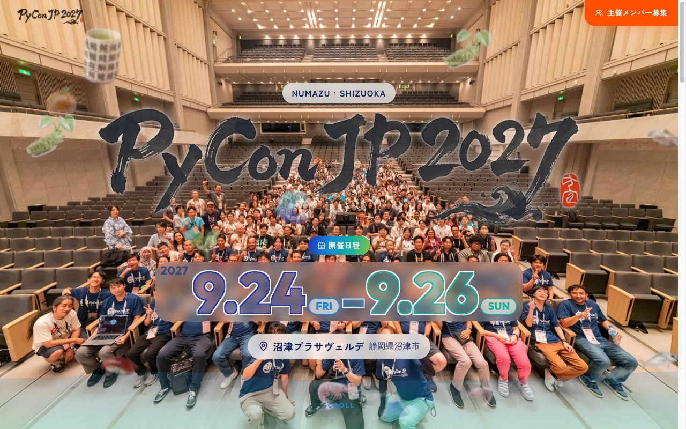
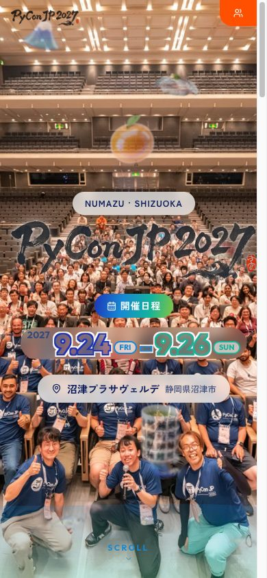
PyCon JP 2027 案A今回沼津
- 背景
- 2026の集合写真を全面に、無加工
- 題字
- 筆文字ロゴ
- 開催地
- 富士山・湯呑み・寿司などの小物を散らす
- 日付
- 輪郭だけの大きな数字＋曜日バッジ
- CTA
- ヘッダー右上の「主催メンバー募集」のみ


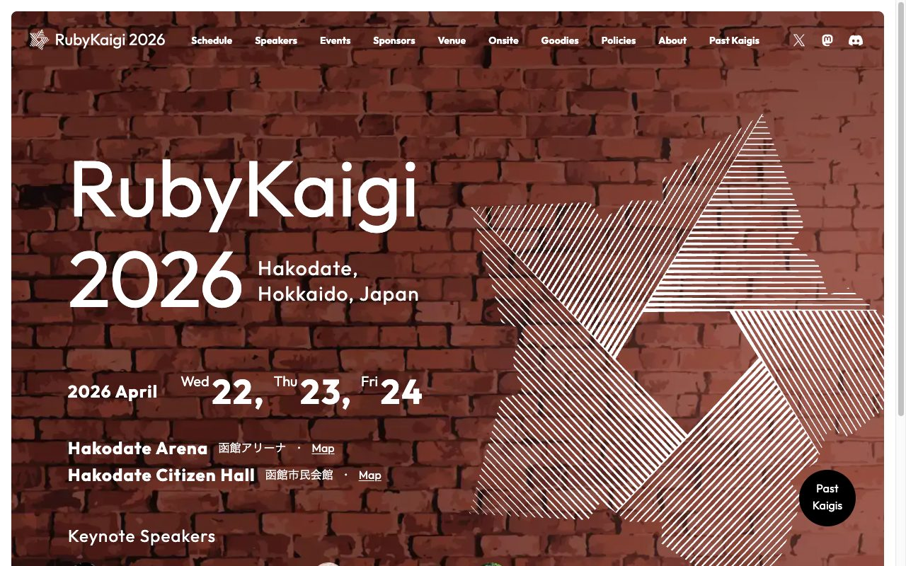
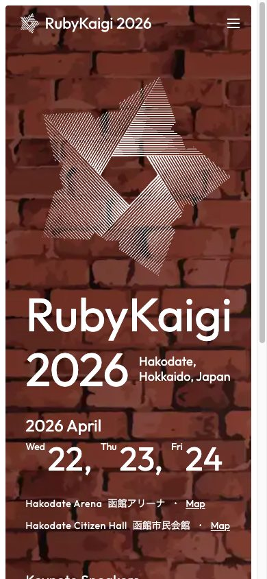
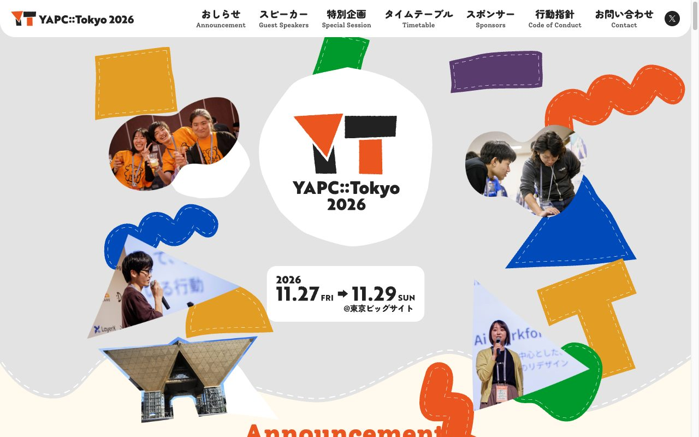
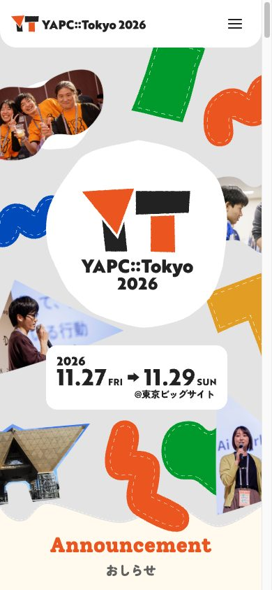
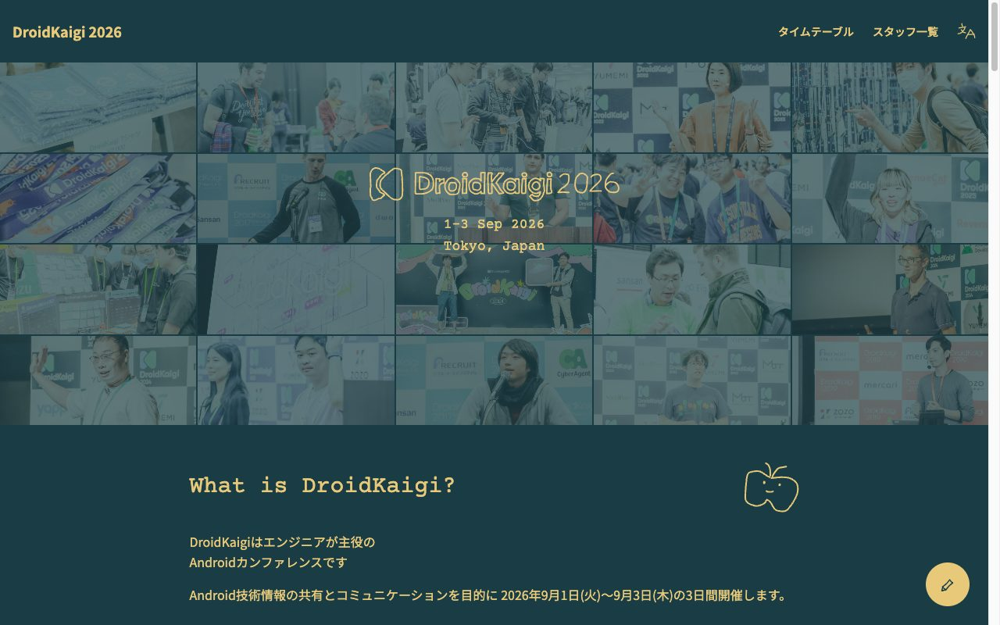
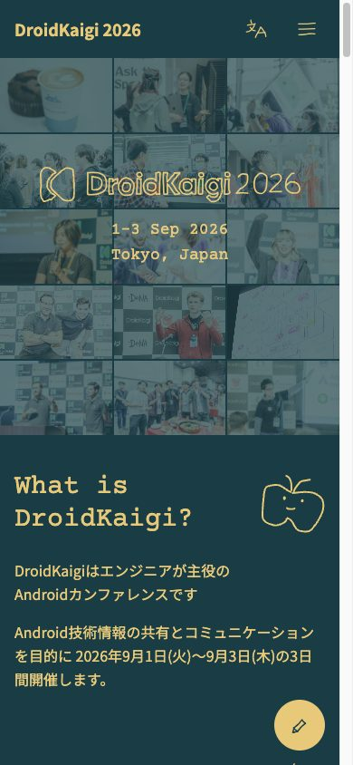
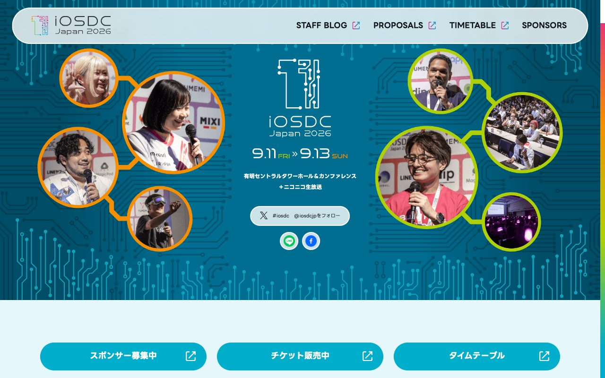
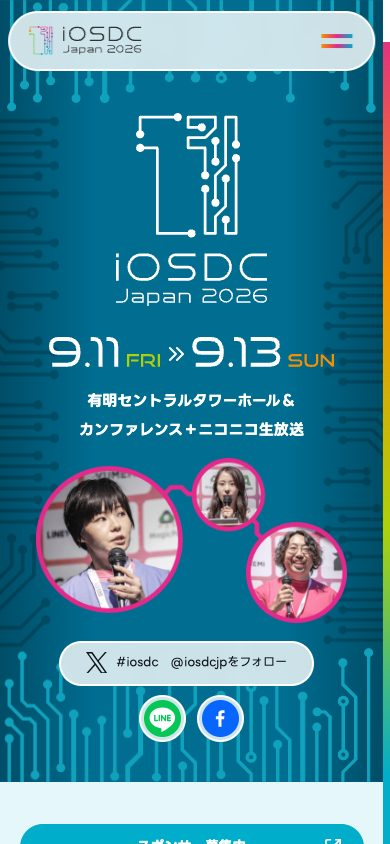
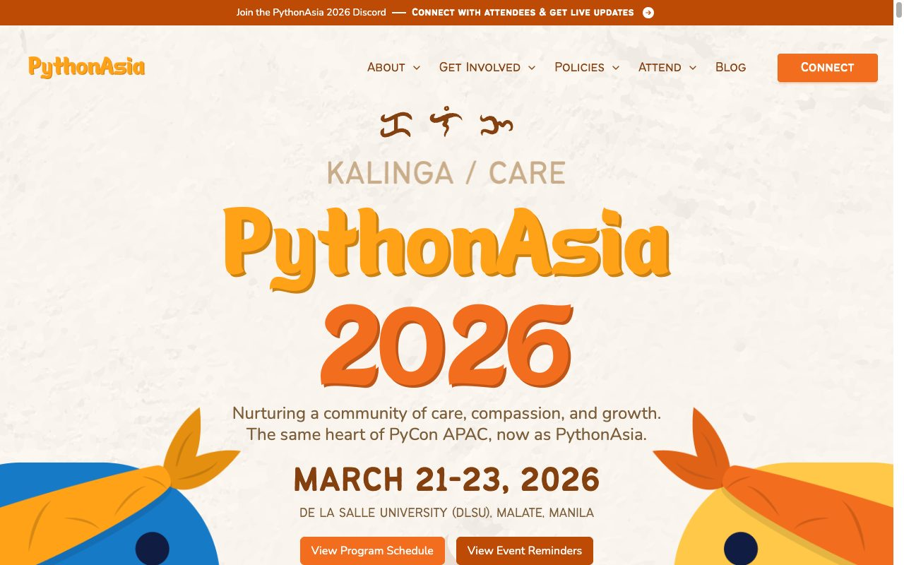
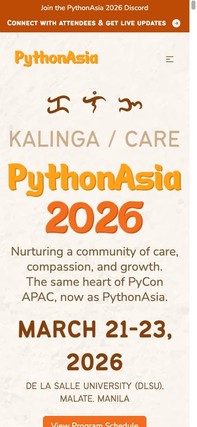
| 人物写真 | 写真の加工 | 開催地の表し方 | 基調の色 | ヒーロー内CTA | |
|---|---|---|---|---|---|
| 案A | あり（1枚） | なし | 小物を多数 | 青緑グラデ＋オレンジ＋写真の色 | なし |
| RubyKaigi | なし | — | 壁の質感 | 赤茶＋白 | なし |
| YAPC::Tokyo | あり（複数） | 不定形に切り抜き | 会場の建物 | 白地＋原色 | なし |
| DroidKaigi | あり（多数） | 暗い色で覆う | 文字のみ | 暗い青緑 | なし |
| iOSDC | あり（複数） | 円形に切り抜き | 文字のみ | 濃い青＋黄緑 | 3つ |
| PythonAsia | なし | — | 言葉と文字 | クリーム＋オレンジ | 2つ |
人物写真を使う3件は、どれも切り抜くか色をかぶせている。無加工の1枚を全面に敷いているのは案Aだけで、題字と写真が張り合っている。
参考: DroidKaigi（色で覆う）、YAPC・iOSDC（切り抜き）壁の質感、会場の建物、現地の言葉と、どれも1つの要素で土地を伝えている。案Aは小物の数が多く、何の土地かが一目で伝わりにくい。
参考: RubyKaigi、YAPC、PythonAsiaiOSDCとPythonAsiaはファーストビューにボタンがある。案Aは募集が目的なのに、ヒーロー内に申し込みボタンがない。
参考: iOSDC、PythonAsia5件とも基調は1〜2色。案Aはグラデーション、オレンジ、写真、小物の色が重なっている。
RubyKaigiは会場名の横に地図リンクがある。案Aの会場ピルにも付けられる。
参考: RubyKaigi